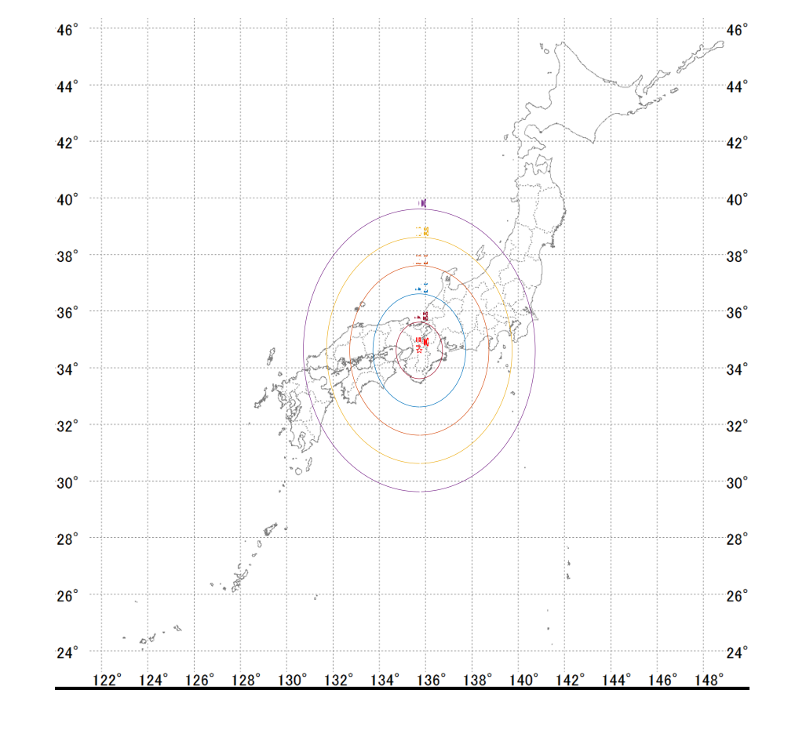
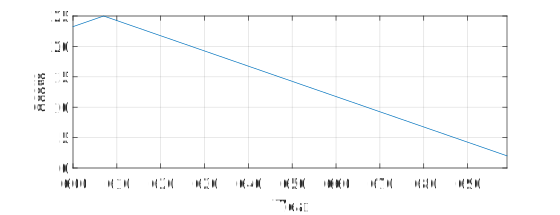
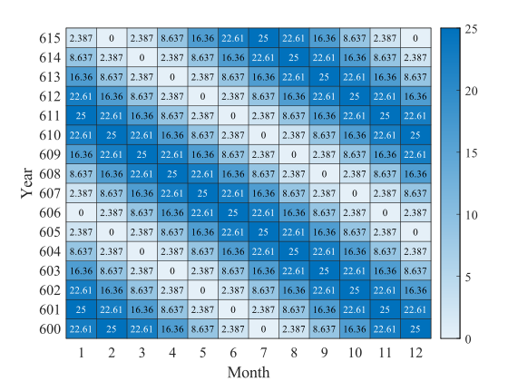

問題4: 私が7世紀の日本で行きたい場所はどこでしょう
緯度，経度，年，月を入力してください
答え: 北緯: 034.614739 東経: 135.734172 607年 05月
行きたい場所は法隆寺です．法隆寺は607年に創建されました．
GeoHack
wikipedia



Question4: Where do I want to go in Japan in the 7th century?
Enter the latitude, longitude, year, and month.
Answer: North latitude: 034.614739, East longitude: 135.734172, Year: 607, Month: 05.
The place I want to go is Horyuji Temple. Horyuji Temple was built in 607.
GeoHack
wikipedia